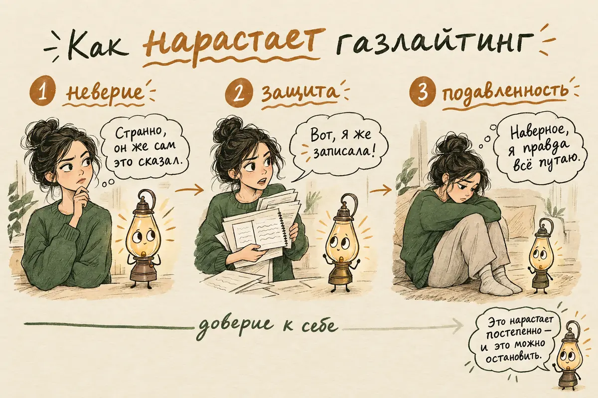

Газлайтинг: что это простыми словами, фразы газлайтера и как защититься
Обновлено: 01.10.2026 · 18 минут чтения
«Такого не было». «Ты всё придумала». «Ты слишком остро реагируешь». Если вы слышите это постоянно и всё чаще думаете, что с вашей памятью что-то не так, — возможно, дело не в памяти. Газлайтинг — это форма психологического давления, при которой человек раз за разом отрицает факты, ваши слова и чувства, пока вы не начинаете сомневаться в собственном восприятии и не привыкаете больше верить ему, чем себе. Он встречается в паре, в семье, на работе и даже у врача. Ниже — чем газлайтинг отличается от обычного спора и разной памяти, какие фразы его выдают, почему он работает даже на умных и уверенных людях и как вернуть доверие к себе.
- Что такое газлайтинг простыми словами
- Газлайтинг или обычный спор: как отличить
- Фразы газлайтера: 15 примеров
- Приёмы газлайтинга
- Признаки, что вас газлайтят
- Почему газлайтинг работает
- Где встречается газлайтинг: в паре, в семье, на работе, у врача
- Кто газлайтит и зачем
- Что делать, если вас газлайтят: 7 шагов
- Что ответить газлайтеру
- А если газлайтер — я?
- Когда газлайтинг — часть насилия
- Когда обращаться к психологу
- Частые вопросы
Что такое газлайтинг простыми словами
Газлайтинг — это когда другой человек настойчиво переписывает реальность: говорит, что не было того, что было, что вы не слышали того, что слышали, и не чувствуете того, что чувствуете. Одна такая фраза ничего не значит. Газлайтингом это становится, когда повторяется снова и снова и постепенно меняет ваше отношение к себе: вы начинаете думать, что вы рассеянный, «слишком эмоциональный», что вам «вечно кажется».
Слово пришло из пьесы Патрика Гамильтона 1938 года и снятого по ней фильма «Газовый свет» (1944). Муж героини приглушает газовые лампы в доме, а когда она замечает, что свет стал тусклее, уверяет, что ей показалось. Вещи пропадают и находятся в её сумке, звуки на чердаке «никто, кроме неё, не слышит» — и героиня постепенно соглашается, что теряет рассудок.
В жизни всё обычно выглядит гораздо будничнее. Никто не прячет вещи — человек просто раз за разом говорит: «Я такого не обещал», «Ты опять всё перепутала», «Нормальный человек на это не обиделся бы». Исследователи из университета Макгилла в качественном исследовании газлайтинга в романтических отношениях описывают его как ситуацию, когда здравомыслящего человека на ложных основаниях убеждают, что он не способен верно понимать происходящее.
Газлайтинг — не диагноз и не медицинский термин. Это название для определённого типа поведения и для того, что оно делает с человеком. Поэтому важно смотреть не на ярлык, а на сценарий: повторяется ли он и что происходит с вашим доверием к себе.
Газлайтинг или обычный спор: как отличить
Газлайтинг отличается от обычного спора тем, что в споре сталкиваются две версии, а при газлайтинге одна версия — ваша — объявляется несуществующей, а вы сами — неадекватным. Это различие важно, потому что слово стало модным, и сейчас газлайтингом иногда называют любое несогласие. Это вредит и тем, кто действительно с ним столкнулся: настоящий газлайтинг тонет в шуме.
Люди действительно часто помнят одно и то же по-разному: память не запись, а реконструкция, и каждый запоминает то, что было важно ему. Сказать «я помню иначе» — нормально. Ошибиться, а потом признать ошибку — тоже нормально.
| Обычный спор | Разная память | Газлайтинг | |
|---|---|---|---|
| Что говорит человек | «Я с тобой не согласен» | «Мне кажется, было иначе» | «Такого не было, ты всё выдумала» |
| Как относится к вашей версии | Спорит с ней | Допускает, что вы правы | Отрицает, что она вообще может быть |
| Как относится к вам | Как к собеседнику | Как к собеседнику | Как к человеку, с которым «что-то не так» |
| Можно ли проверить | Да, и оба готовы | Да, и оба готовы | Проверка раздражает или объявляется «паранойей» |
| Как часто | Время от времени | Время от времени | Постоянно, по одной схеме |
| Что вы чувствуете после | Раздражение, несогласие | Лёгкое недоумение | Растерянность, вину, сомнение в себе |
Короткая проверка: после разговоров с этим человеком вы чаще думаете «мы не договорились» или «со мной что-то не так»? Первое — обычный конфликт. Второе, если повторяется, — повод присмотреться внимательнее.

Фразы газлайтера: 15 примеров
Фразы газлайтинга сами по себе звучат обыденно — опасными их делает частота и то, что они всегда бьют в одну точку: в ваше право доверять себе. Любую из них может однажды сказать и вполне доброжелательный человек. Насторожиться стоит, если вы узнаёте не одну, а целую группу и слышите их регулярно.
Отрицание фактов
- «Такого не было».
- «Я этого не говорил, ты опять всё придумываешь».
- «Мы ни о чём таком не договаривались».
Сомнение в вашей памяти и адекватности
- «У тебя с памятью проблемы, тебе надо провериться».
- «Ты всегда всё путаешь».
- «Ты себя вообще слышишь? Это же бред».
Обесценивание чувств
- «Ты слишком чувствительная, тебя всё задевает».
- «Ты раздуваешь из мухи слона».
- «Нормальный человек на это не обиделся бы».
Перевод стрелок
- «Если бы ты не начала, я бы не сорвался».
- «Ты сама меня до этого довела».
- «Это ты всё время ищешь проблему».
Ссылка на «всех»
- «Все говорят, что ты неадекватная».
- «Спроси кого угодно — тебе скажут то же самое».
- «Твои друзья тоже думают, что у тебя проблемы, просто молчат».
Обратите внимание: у всех этих фраз нет предмета спора. В них обсуждается не то, что произошло, а вы — ваша память, чувствительность, адекватность. Это и есть главный признак.
Приёмы газлайтинга
Газлайтинг складывается из нескольких повторяющихся приёмов, и обычно человек использует не один, а несколько. Знать их полезно, чтобы узнавать сценарий, а не спорить с каждой отдельной фразой.
- Отрицание. Человек отрицает свои слова, обещания и поступки, даже если вы помните их точно: «Я такого не говорил».
- Отказ слушать. Не отвечает на суть, а делает вид, что не понимает: «Опять ты начинаешь», «Я не собираюсь это обсуждать».
- Сомнение в памяти. Подчёркивает, что вы всё путаете, — особенно когда вы правы.
- Обесценивание. Ваши чувства объявляются преувеличением или признаком слабости: «Ты просто устала», «У тебя гормоны».
- Смена темы. Вместо ответа — встречная претензия, и через пять минут вы уже оправдываетесь за что-то другое.
- «Забывание». Человек «не помнит» именно то, что ему неудобно, и при этом отлично помнит ваши ошибки.
- Изоляция. Убеждает, что близкие вас не понимают или настроены против вас, чтобы вам не с кем было сверить реальность.
- Чередование тепла и холода. После давления — забота, подарки, нежность. Вы думаете, что ошиблись в нём, и снова начинаете сомневаться в себе.
Последний приём особенно важен. Участники исследования Уиллиса Кляйна с коллегами описывали отношения, где газлайтинг сочетался с заботой и нежностью на протяжении долгого времени. Именно эта смесь мешает распознать происходящее: человек, который вчера был таким внимательным, не может же сегодня намеренно врать.
Признаки, что вас газлайтят
Газлайтинг легче распознать по своему состоянию, чем по чужим словам: слова можно объяснить, а изменения в себе — заметить. Вот на что стоит обратить внимание:
- Вы постоянно извиняетесь, даже когда не понимаете, в чём виноваты.
- Всё чаще сомневаетесь в своей памяти и думаете, что «правда стали рассеянными».
- Начали записывать разговоры или делать скриншоты, чтобы проверить себя, — и это вас пугает.
- Перед тем как что-то сказать, прокручиваете в голове, как это прозвучит, чтобы не было «скандала».
- Оправдываете этого человека перед друзьями или не рассказываете им, что происходит.
- Чувствуете, что «раньше были другим» — увереннее, веселее, спокойнее.
- Вам трудно принимать даже простые решения без его одобрения.
- Часто думаете: «Может, я и правда слишком чувствительный?»
- Рядом с ним вас не покидает ощущение «я схожу с ума», а вдали от него оно ослабевает.
Американский психоаналитик Робин Стерн в книге «Эффект газлайтинга» описывает три стадии, через которые часто проходит человек. Сначала неверие: «Странно, он ведь сам это сказал». Потом защита: вы спорите, доказываете, приводите факты — и раз за разом проигрываете. И наконец подавленность: сил спорить нет, проще согласиться, что вы всё путаете. Это не научная классификация, а описание из практики, но многие узнают в нём себя.
Если подобное происходит в отношениях вместе с контролем, ревностью и постоянной критикой, загляните в статью о токсичных отношениях: газлайтинг редко бывает единственным приёмом.
Почему газлайтинг работает
Газлайтинг работает не потому, что жертва глупая или слабая, а потому, что все люди сверяют своё понимание реальности с близкими. Если что-то показалось странным, мы спрашиваем у того, кому доверяем: «Мне не почудилось?» Это нормальный и полезный механизм — он помогает не путаться и уточнять свои впечатления. Газлайтинг использует именно его.
В теоретической модели Уиллиса Кляйна, Сюзанн Вуд и Дженнифер Барц (2025) газлайтинг описан как процесс научения: когда близкий человек снова и снова говорит, что ваше восприятие ошибочно, мозг постепенно начинает считать его источником более надёжным, чем собственные глаза и память. Авторы подчёркивают, что так может случиться с любым человеком — достаточно доверять не тому. Похожие выводы делают и российские исследователи в обзоре Т. В. Ермоловой с коллегами: газлайтинг возможен, когда обычные механизмы восприятия себя и мира попадают в необычную ситуацию, а близкие отношения дают газлайтеру рычаг, потому что именно близкие влияют на наш образ себя.
Есть и общественная сторона. Социолог Пейдж Свит показала, что газлайтинг опирается на стереотипы, которые и так есть в обществе: «женщины истеричны», «у неё нервы», «кто ей поверит». Чем охотнее окружающие верят такому ярлыку, тем легче убедить человека, что проблема в нём. Отсюда частые угрозы вроде «тебя признают невменяемой» или «никто не поверит, что я так сказал».
Наконец, газлайтинг почти всегда нарастает постепенно. Никто не начинает отношения со слов «ты сумасшедшая». Сначала это мелочи, которые легко списать на усталость, и к тому моменту, когда давление становится явным, сомнение в себе уже стало привычкой.

Где встречается газлайтинг: в паре, в семье, на работе, у врача
Газлайтинг возможен в любых отношениях, где один человек зависит от другого или сильно ему доверяет. Чаще всего о нём говорят в паре, но сценарий одинаков везде.
- В отношениях. Самый изученный вариант. Партнёр отрицает измену, о которой есть очевидные признаки, обещания, данные вчера, или собственные вспышки гнева: «Я не кричал, ты преувеличиваешь». Часто газлайтинг сопровождает ревность и контроль.
- В семье. Родители, которые отрицают то, что было в детстве: «Мы тебя никогда не наказывали», «Ты всё выдумываешь, у тебя было счастливое детство». Взрослому человеку такое отрицание бывает больнее, чем само воспоминание. Если вы узнаёте это, пригодится статья о детских травмах.
- На работе. Руководитель отрицает данные им поручения, а потом обвиняет в невыполненной задаче, или коллега присваивает ваш результат и уверяет, что вы его не делали. Если это продолжается долго, может привести к выгоранию и хроническому стрессу на работе.
- У врача. В последние годы появился термин «медицинский газлайтинг» — когда жалобы пациента отметают словами «это нервы», «вам кажется», «просто меньше читайте в интернете». Социолог Дженнифер Себринг показала, что чаще с этим сталкиваются женщины и люди из уязвимых групп. Важно: здесь речь обычно не о намеренной манипуляции, а о привычке не доверять словам пациента, но последствия похожи — человек перестаёт верить своему телу и не получает помощи.
Кто газлайтит и зачем
Газлайтинг бывает и сознательной тактикой, и неосознанной привычкой защищаться. Это не значит, что второй вариант менее разрушителен, но помогает понять, с чем вы имеете дело.
- Как способ контроля. Если человек сомневается в себе, им легче управлять: он реже уходит, реже жалуется и легче соглашается. Здесь газлайтинг — часть психологического насилия, и он обычно сочетается с изоляцией, контролем денег и общения, угрозами.
- Как защита от стыда. Некоторым людям невыносимо признать, что они ошиблись, накричали, обидели. Проще искренне поверить, что «ничего такого не было», и убедить в этом другого. Такой человек может даже не понимать, что делает.
- Как выученный стиль. Тот, кто вырос в семье, где неудобное отрицали, а чувства высмеивали, может повторять то же самое, считая это нормой.
Исследования связывают газлайтинг с определёнными чертами. В работе Эвиты Марч с коллегами люди с более выраженными «тёмными» чертами — психопатией, макиавеллизмом, садизмом — чаще считали приёмы газлайтинга допустимыми в отношениях. Мужчины в среднем считали их более приемлемыми, чем женщины, но газлайтить может человек любого пола.
Будьте осторожны с выводом «он нарцисс». Популярные тексты часто ставят знак равенства между газлайтингом и нарциссическим расстройством, но расстройство личности может определить только специалист после обследования. Для вас важнее не диагноз другого человека, а то, как его поведение влияет на вас и что вы готовы с этим делать.
Что делать, если вас газлайтят: 7 шагов
Главная задача — вернуть себе опору на собственное восприятие, а не выиграть спор. Газлайтера почти невозможно переспорить: если бы факты на него действовали, газлайтинга бы не было. Вот что помогает:
- Назовите происходящее. Просто сказать себе: «Это похоже на газлайтинг» — уже шаг. Название отделяет проблему в отношениях от «проблемы со мной».
- Записывайте факты сразу. Короткие заметки после важных разговоров: дата, что было сказано, о чём договорились. Не для того, чтобы предъявить, а чтобы вам самим было на что опереться, когда начнутся сомнения. Записи храните там, куда у другого человека нет доступа.
- Перестаньте спорить о том, «как было». Спор о реальности — игра, в которой выигрывает тот, кто увереннее отрицает. Достаточно один раз спокойно сказать: «Я помню иначе» — и не доказывать дальше.
- Сверяйтесь с людьми вне этих отношений. Расскажите о происходящем другу, родственнику, психологу — тому, кто не участвует в конфликте. Свежий взгляд со стороны часто сразу показывает, что с вашей памятью всё в порядке.
- Доверяйте своим чувствам. Даже если вы не уверены в деталях, ваши чувства — тоже информация. «Мне было обидно» не требует доказательств, это факт о вас.
- Выходите из разговора. Если разговор превращается в обсуждение вашей адекватности, вы имеете право его закончить: «Я не буду обсуждать, нормальная ли я. Вернёмся к этому, когда будем говорить о деле».
- Возвращайте себе опору. Дела, в которых вы чувствуете себя уверенно, люди, рядом с которыми спокойно, занятия, возвращающие ощущение тела: прогулки, спорт, сон. Участники исследования Кляйна, которым удалось восстановиться, говорили именно об этом: о дистанции с человеком, который газлайтил, о более здоровых отношениях и о занятиях, которые возвращали их «в тело».
Если у вас нет сил даже на эти шаги, начните с одного — с записей или с разговора с человеком, которому доверяете. Об этом подробнее — в статье про личные границы: там есть готовые формулы отказа и то, что делать, когда близкие сопротивляются.
Что ответить газлайтеру
Лучший ответ газлайтеру — короткий, спокойный и не вступающий в спор о реальности. Ваша задача — не доказать, что вы правы, а не дать сдвинуть себя с вашей точки зрения. Вот примеры:
| Если говорят | Можно ответить |
|---|---|
| «Такого не было» | «Я помню иначе. Спорить об этом не буду» |
| «Ты всё придумываешь» | «Я понимаю, что у тебя другая версия. Моя — такая» |
| «Ты слишком чувствительная» | «Мне было обидно. Это мои чувства, и они не обсуждаются» |
| «У тебя проблемы с памятью» | «С моей памятью всё в порядке. Давай вернёмся к тому, о чём мы говорили» |
| «Ты сама меня довела» | «За свои поступки отвечаешь ты. Я готова обсудить, что нам обоим делать дальше» |
| «Все считают, что ты неадекватная» | «Если у кого-то есть вопросы ко мне, пусть скажут мне сами» |
| «Опять ты начинаешь» | «Я поднимаю вопрос, который для меня важен. Если сейчас не время, давай выберем другое» |
Не стоит ждать, что после такого ответа человек признает свою неправоту. Цель ответа другая: вы слышите свой голос и не соглашаетесь с тем, с чем не согласны. Если в ответ на любую попытку сохранить свою точку зрения давление только усиливается — кричат, угрожают, ломают вещи, — разговаривать дальше небезопасно. В этом случае важнее не формулировки, а то, что написано в разделе о насилии.
Сомневаетесь, газлайтинг это или вы правда всё перепутали? Можно описать ситуацию в чате AI Therapist и спокойно разобрать её: что было сказано, что вы почувствовали и как ответить, не вступая в спор о реальности. Анонимно, без регистрации и в любое время. Это не оценка вашего партнёра и не замена психологу.
Начать разговорА если газлайтер — я?
Иногда, читая о газлайтинге, человек узнаёт в описании не близкого, а себя. Это неприятно, но это хорошая новость: газлайтинг, который замечают, можно прекратить. Чаще всего он неосознанный и держится на привычке защищаться от стыда.
Признаки того, что вы сами склонны к газлайтингу:
- вам трудно сказать «я был неправ» или «да, я это сказал»;
- в спорах вы часто говорите «ты всё выдумываешь» или «ты слишком остро реагируешь»;
- когда близкий говорит, что ему больно, вы сразу объясняете, почему ему не должно быть больно;
- вы замечаете, что после разговоров с вами люди извиняются, хотя претензия была к вам.
Что помогает: заменить «такого не было» на «я помню иначе» — это честно и оставляет место для другого человека; признавать чувства, даже если не согласны с выводами: «Я вижу, что тебе обидно»; учиться выдерживать стыд от собственных ошибок, не переводя его на другого. Если вам сложно сдерживать злость в споре, пригодится статья о вспышках гнева, а если за этим стоит постоянное чувство вины и страх оказаться плохим, — с ним полезно разобраться отдельно.
Когда газлайтинг — часть насилия
Газлайтинг становится частью психологического насилия, когда он сочетается с контролем, изоляцией, угрозами и страхом. Всемирная организация здравоохранения относит психологическое насилие и контролирующее поведение к насилию со стороны партнёра наравне с физическим. Насторожиться стоит, если, кроме газлайтинга, есть:
- контроль денег, телефона, переписки, круга общения;
- запреты видеться с друзьями и родными или постоянная критика их;
- угрозы — уйти, забрать детей, навредить себе или вам, «рассказать всем, какая вы»;
- вспышки ярости, после которых вы боитесь заговорить;
- страх, что вам сделают больно, если вы скажете или сделаете «не то».
В таких отношениях привычные советы «поговорите спокойно» и «отстаивайте свою позицию» могут быть опасны: попытка противостоять иногда усиливает агрессию. Важнее заранее продумать безопасность: кому вы можете позвонить, где можете переночевать, где лежат документы и деньги. Подробнее о том, как выходить из таких отношений безопасно и почему уйти бывает так трудно, — в статье про токсичные отношения, а если после разрыва тянет вернуться — в статье об эмоциональной зависимости.
Когда обращаться к психологу
Даже после того как газлайтинг закончился, сомнения в себе могут остаться надолго. Участники исследования Кляйна описывали ослабленное чувство себя и недоверие к людям, которое сохранялось после разрыва. Стоит обратиться к психологу или психотерапевту, если:
- вы до сих пор не уверены, что с вами происходило, и постоянно прокручиваете прошлые разговоры;
- вам трудно принимать решения и доверять своему мнению даже в мелочах;
- вы боитесь новых отношений или замечаете, что снова попадаете в похожие;
- появились тревога, бессонница, ощущение пустоты или признаки депрессии;
- воспоминания об этих отношениях приходят против воли, вызывают панику или ощущение нереальности — это может быть похоже на ПТСР;
- вы остаётесь в отношениях, где вам страшно, и не видите, как из них выйти;
- появились мысли о том, что жить не стоит, — в этом случае помощь нужна сегодня.
С последствиями газлайтинга работают в разных подходах: в когнитивно-поведенческой терапии — с привычкой сомневаться в своём восприятии и с мыслями «со мной что-то не так», в терапии, сфокусированной на сострадании, — со стыдом и самокритикой, в схема-терапии — с убеждениями, из-за которых тянет в похожие отношения. Если трудно понять, почему вас снова и снова тянет к тем, рядом с кем вы чувствуете себя неуверенно, загляните в статью о типах привязанности. Бесплатно в России можно обратиться в психоневрологический диспансер по месту жительства и в региональные центры психологической помощи; подробнее — в справочнике бесплатной помощи.
Статья носит просветительский характер и не заменяет консультацию специалиста. Если вам прямо сейчас невыносимо тяжело, страшно за свою безопасность или появляются мысли о том, чтобы причинить вред себе или другим, позвоните: 112 — при угрозе жизни; +7 (495) 989-50-50 — круглосуточная линия ЦЭПП МЧС России; 8-800-2000-122 (с мобильного — 124) — детям, подросткам и их родителям; 051 (с мобильного 8 (495) 051) — для Москвы. Куда ещё можно обратиться бесплатно — в справочнике помощи.
Частые вопросы
Что такое газлайтинг простыми словами?
Газлайтинг — это когда человек раз за разом отрицает факты, ваши слова и чувства, пока вы не начинаете сомневаться в собственной памяти и адекватности. Типичные фразы — «такого не было», «ты всё придумала», «ты слишком чувствительный». Газлайтингом это делает не одна фраза, а повторяющийся сценарий, после которого вы доверяете ему больше, чем себе.
Чем газлайтинг отличается от обычного спора?
В споре сталкиваются две версии событий, и обе стороны готовы их обсуждать и проверять. При газлайтинге вашу версию объявляют несуществующей, а вас — человеком, с которым что-то не так. Главная подсказка — ваше состояние: после спора вы не согласны, а после газлайтинга сомневаетесь в себе.
Как понять, что тебя газлайтят?
Смотрите на себя, а не только на слова другого человека: вы постоянно извиняетесь, сомневаетесь в памяти, боитесь сказать «не то», оправдываете его перед друзьями и рядом с ним чувствуете, что сходите с ума. Если вдали от этого человека сомнения ослабевают, это сильный сигнал. Помогают записи разговоров сразу после них: если записи регулярно расходятся с тем, что вам потом рассказывают, дело не в вашей памяти.
Какие фразы говорит газлайтер?
Чаще всего это «такого не было», «я этого не говорил», «ты всё путаешь», «ты слишком чувствительная», «ты раздуваешь из мухи слона», «ты сама меня довела» и «все считают, что ты неадекватная». У этих фраз нет предмета спора: в них обсуждается не то, что произошло, а ваша память и адекватность. Насторожиться стоит, если вы слышите их регулярно.
Что ответить газлайтеру?
Коротко и без спора о реальности: «Я помню иначе, спорить об этом не буду», «Мне было обидно, это мои чувства», «Давай вернёмся к тому, о чём мы говорили». Цель ответа — не доказать свою правоту, а не дать сдвинуть себя с вашей точки зрения. Если в ответ давление усиливается и вам становится страшно, важнее позаботиться о безопасности.
Газлайтинг может быть неосознанным?
Да. Некоторые люди отрицают свои ошибки, потому что им невыносимо их признать, и искренне верят, что «ничего такого не было». Неосознанный газлайтинг не становится от этого безвредным, но с таким человеком иногда можно договориться, если он готов слышать. Если газлайтинг сочетается с контролем, изоляцией и угрозами, речь уже о психологическом насилии.
Газлайтер — это обязательно нарцисс?
Нет. Исследования связывают газлайтинг с «тёмными» чертами личности, но газлайтить может любой человек: из желания контролировать, из страха признать ошибку или по привычке, усвоенной в семье. Нарциссическое расстройство личности может определить только специалист. Для вас важнее не диагноз другого человека, а то, как его поведение влияет на вас.
Что такое медицинский газлайтинг?
Так называют ситуацию, когда жалобы пациента отметают словами «это нервы», «вам кажется» или «вы слишком много читаете в интернете», не разобравшись в симптомах. Обычно это не намеренная манипуляция, а привычка не доверять словам пациента, но человек перестаёт верить своему телу и не получает помощи. Если это происходит с вами, можно записать симптомы заранее, попросить внести жалобы в карту и обратиться к другому врачу.
Как подготовлен материал. Текст подготовлен редакцией AI Therapist на основе исследований газлайтинга в близких отношениях, социологических работ о том, как газлайтинг опирается на общественные стереотипы, исследования о чертах личности, связанных с газлайтингом, работы о медицинском газлайтинге и данных ВОЗ о психологическом насилии. Ссылки на первоисточники стоят прямо у утверждений. Газлайтинг — не диагноз, поэтому признаки и фразы в статье — ориентиры для самонаблюдения, а не способ поставить диагноз себе или другому человеку. Шаги — редакционная практическая схема по принципам когнитивно-поведенческой терапии, а не валидированный протокол. Статья носит просветительский характер и не заменяет консультацию специалиста.
Источники: Klein W., Li S., Wood S. «A qualitative analysis of gaslighting in romantic relationships», Personal Relationships, 2023, Klein W., Wood S., Bartz J. A. «A theoretical framework for studying the phenomenon of gaslighting», Personality and Social Psychology Review, 2025, Sweet P. L. «The sociology of gaslighting», American Sociological Review, 2019, March E., Kay C. S., Dinić B. M. et al. «“It’s all in your head”: personality traits and gaslighting tactics in intimate relationships», Journal of Family Violence, 2025, Sebring J. C. H. «Towards a sociological understanding of medical gaslighting in western health care», Sociology of Health & Illness, 2021, Ермолова Т. В., Литвинов А. В., Балыгина Е. А., Чернова О. Е. «Новые теоретические подходы к изучению феномена газлайтинга», Современная зарубежная психология, 2024, ВОЗ «Насилие в отношении женщин», информационный бюллетень. Источники проверены 01.10.2026.
Кто отвечает за содержание сайта и по каким правилам мы готовим материалы — на странице о проекте.
Читать также
- Токсичные отношения — если газлайтинг сочетается с контролем и качелями.
- Эмоциональная зависимость — если не получается уйти, даже когда плохо.
- Личные границы — если трудно сказать «нет» и стоять на своём.
- Типы привязанности — если в отношениях повторяется один и тот же сценарий.
- Как повысить самооценку — если после отношений вы перестали себе доверять.
- Детские травмы — если «такого не было» вы слышите от родителей.
- КПТ — подход, который помогает отделять факты от чужих интерпретаций.